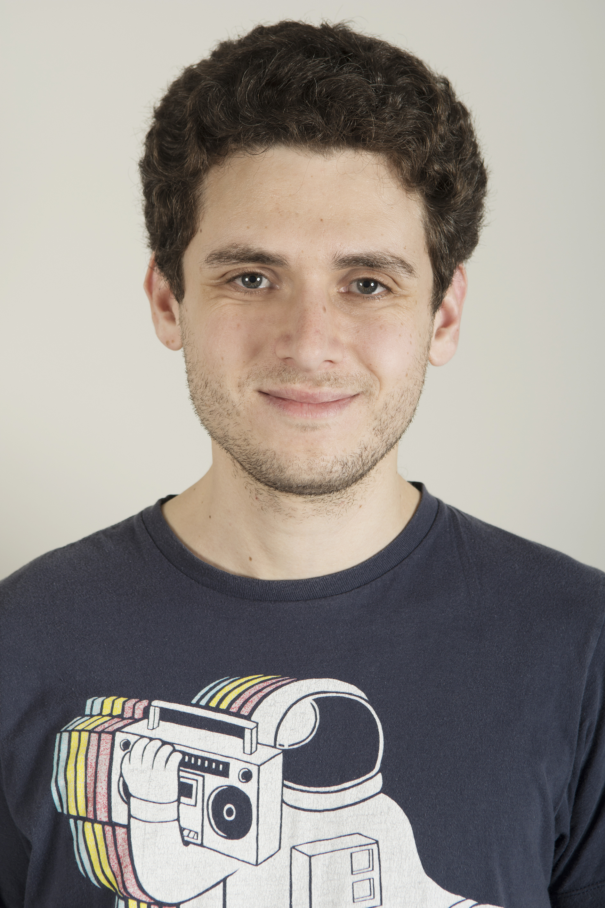

Victor May
Machine Learning Engineer & Researcher
About Me

Hello, Internet.
I’m a Staff Software Engineer at Google Cloud, based in New York City, currently focused on AI for software engineering. Previously, I led a team at Chegg fine-tuning vision-language models (VLMs) for multimodal question answering. Before that, I worked on recommender systems and multilingual NLP at Taboola.
I hold an M.Sc. in Applied Mathematics from Tel Aviv University and a B.Sc. in Computer Science and Mathematics from Bar-Ilan University.
I contribute to open-source AI projects. Most recently, I collaborated with Ontocord on Aurora-M, a multilingual large language model. I also participated in the OpenAssistant initiative by LAION.
Links
Google Scholar | LinkedIn | Resume | X (Twitter)
News
October 2025: Our paper FreshBrew: A Benchmark for Evaluating AI Agents on Java Code Migration had been accepted to International Conference on Software Engineering (ICSE) 2026.
September 2025: Our papers FreshBrew: A Benchmark for Evaluating AI Agents on Java Code Migration and GitChameleon 2.0: Evaluating AI Code Generation Against Python Library Version Incompatibilities had been accepted to the NeurIPS 2025 Deep Learning for Code Workshop.
Publications
- 2025
-


-


-
- 2015
-
Blogging
I write about machine learning and related topics on
Medium.
Kaggle Competitions
- 🥈 Silver Medal (Top 1%) – Feedback Prize: English Language Learning
- 🥈 Silver Medal (Top 3%) – Google AI4Code
- 🥉 Bronze Medal (Top 6%) – U.S. Patent Phrase to Phrase Matching